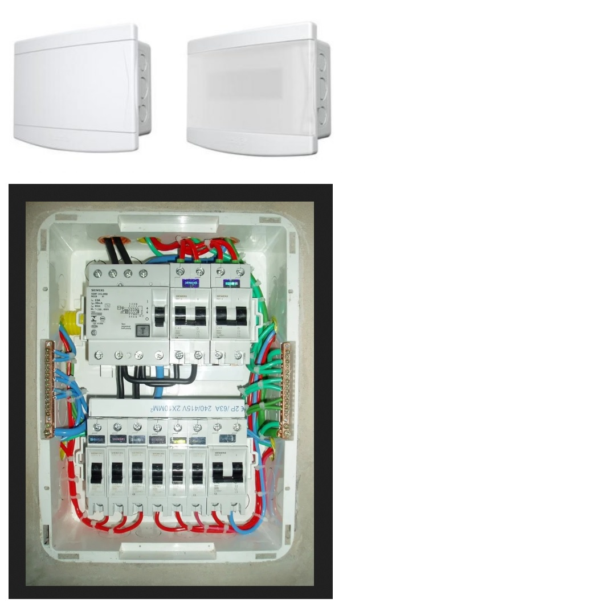
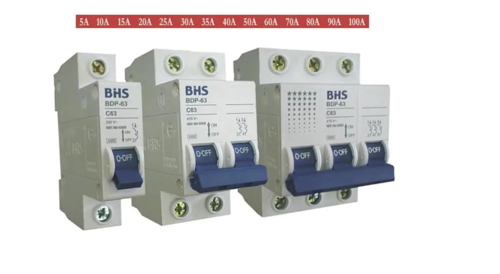
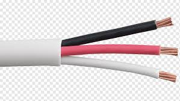
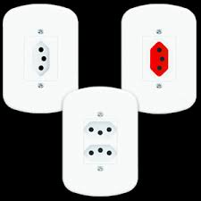

Obra ∞ Compartilhada
Aprendendo e compartilhando! Juntos vamos mais longe!
Gostaria de compartilhar com você um pouco sobre a parte elétrica de uma residência. Aos leigos sobre o assunto tentarei esclarecer duvidas básicas, explicarei como funciona a instalação elétrica residencial desde a planta até a execução, o que é uma tomada "110", uma tomada "220", cabos , disjuntores, representações em planta, etc.
Antes de começarmos devo alertar que esse conteúdo está sendo criado no intuito de compartilhar conhecimento, isso não quer dizer que estará capacitado a fazer uma instalação elétrica ou até mesmo conserta aquela "tomadinha" sozinho! Para isso existem cursos técnicos que lhe capacitam a executar e criar projetos residências entre outros. Acidentes com energia elétrica são muito graves, podendo levar, inclusive, à morte.

Para iniciarmos, irei explicar como a energia é fornecida para sua residência, seja ela pela Light ou pela Ampla ( ambas RJ ) ou qualquer outra concessionária. Vou usar como exemplo a Light, para solicitar uma nova instalação elétrica na Light em um de seus procedimentos é o informativo sobre a carga instalada que terá a residência.
Abaixo são apresentadas as situações para atendimento em entradas individuais: a) Ligações novas e alterações de carga, com carga instalada até15 kW,sem obrigatoriedade de apresentação de ART, RRT ou TRT para as seguintes modalidades:
- Entradas individuais isoladas, exclusivamente residenciais, monofásicas e polifásicas ligadas em sistema 220/127 V, com carga instalada até15 kW, localizadas em regiões de rede de distribuição urbana, aérea e subterrânea.- Entradas individuais isoladas, exclusivamente residenciais, monofásicas a 2 ou 3 fios ligadas em sistema 230-115 V, com carga instalada até 15 kW,localizadas em região de rede de distribuição aérea rural.
Devem ser tratadas junto à Light pelo próprio interessado,ou, se desejado, por profissional autorizado pelo mesmo.b)Ligações novas e alterações de carga, com carga instalada até15 kW,com obrigatoriedade de apresentação de ART, RRT ou TRT por responsável técnico habilitado pelo CREA, CAU ou CFT para as seguintes modalidades:
- Entradas individuais isoladas, não residenciais, monofásicas e polifásicas ligadas em sistema 220/127 V, com carga instalada até15 kW,localizadas em regiões de rede de distribuição urbana, aérea e subterrânea.- Entradas individuais isoladas, não residenciais, monofásicas a 2 ou 3 fios ligadas em sistema 230-115 V,com carga instalada até 15 kW,localizadas em região de rede de distribuição aérea rural.
- Entradas individuais situadas em via pública, tais como, provisórias de obra, festivas, bancas de jornal, quiosques, banco 24 horas, cabines telefônicas, mobiliário urbano, terminais rodoviários, equipamentos de operação de outras concessionárias de serviços públicos etc. monofásicas e polifásicas ligadas em sistema 220/127 V ou 230-115 V, com carga instalada até15 kW localizadas em regiões de rede de distribuição urbana ou rural, aérea e subterrânea.Devem ser tratadas junto à Light pelo próprio interessado, ou, se desejado, por profissional autorizado pelo mesmo.
c) Ligações novas e alterações de carga, com carga instalada acima de 15 kW,com obrigatoriedade de apresentação de ART, RRT ou TRT,por responsável técnico habilitado pelo CREA, CAU ou CFT. Quando for o caso, será necessária a apresentação de projeto elétrico (projeto de entrada)previamente aprovado.Devem ser tratadas junto à Light pelo próprio interessado,ou, se desejado, por profissional autorizado pelo mesmo.
FONTE: RECON-BT 2019 LIGHT
Isso quer dizer que para solicitar um novo medidor de energia na Light você deverá informal qual a finalidade e dependendo de qual for, será necessário um profissional habilitado para dar entrada. Iremos falar sobre entradas residências carga até 15kV monofásicas ligadas a sistema 127V que é a grande maioria das solicitações.
Toda residência deverá ter seu Quadro de Luz (QDL), onde é alocado os disjuntores e distribuído os cabos de energia para ligar tomadas e luzes. Existem QDL's de diversos tamanhos, que suportam desde 4 disjuntores até 64 disjuntores (referência QDL's Tigre), o quadro deverá ser escolhido conforme a quantidade de disjuntores solicitada em projeto.
Os disjuntores são um sistema de segurança contra sobrecargas elétricas ou curtos-circuitos, que tem a função de cortar a passagem de corrente elétrica, caso a intensidade da mesma seja excedida. Temos diferentes tipos de disjuntores :
- Disjuntor Unipolar: É indicado para circuitos com uma única fase. Ex: Circuitos de iluminação e tomadas em sistemas fase/neutro (127 ou 220 v)
- Disjuntor Bipolar: É indicado para circuitos com duas fases. Ex: Circuitos para chuveiros e torneiras elétricas em sistemas bifásicos fase/fase (220 v)
- Disjuntor Tripolar: É indicado para circuitos com três fases. Ex: Circuitos para motores em sistemas trifásicos (220 ou 380 v).
Cada circuito tem uma amperagem, ou uma quantidade de corrente, específica. Quando tal valor é excedido, o disjuntor cessa o fluxo de corrente para evitar danos à fiação. No mercado temos disjuntores com amperagens tabeladas. Os mais utilizadas em residências são os de 15A e 20A para iluminação e tomadas respectivamente. Contudo, vale o que está em projeto, pois foi dimensionado por um profissional habilitado.
O mau dimensionamento do disjuntor gera:
- Queda de energia frequente quando a amperagem for inferior a corrente solicitada pelo circuito, podem queimar os eletrodomésticos.
- Possível incêndio quando a amperagem for muito superior a corrente solicitada pelo circuito.
Os cabos (condutores) variam de espessura e cor, o que devemos levar em consideração é a finalidade desse condutor. A quantidade de carga estimada para aquele circuito o qual usaremos aquele condutor, seja para alimentar tomadas de uso comum, iluminação ou tomadas de uso especifico como: micro ondas , ar condicionado, chuveiros elétricos, etc. De um modo geral, podemos dizer que para uma instalação elétrica residencial usamos condutores de 1,5mm ~ 10mm de diâmetro dependendo das TUE'S.
Mas porque essa variação de tamanho nos condutores ? Isso se dá, devido a necessidade de cada aparelho a ser utilizado, por isso durante o dimensionamento o cliente deve informar não só o posicionamento que ele deseja das tomadas, mas também o que pretende utilizar. Vamos supor que uma tomada que foi projetada para ligar uma televisão, seja "aproveitada" para ligar um micro ondas, ou qualquer outro aparelho de maior consumo de energia, a tendência é do condutor sobreaquecer assim desligando constantemente o disjuntor daquele circuito. Já a variedade de cores é para facilitar a instalação e/ou identificação dos cabos de um circuito, não existe um padrão de cores a ser seguido, são poucas empresas que padronizam, podemos dizer que o único que é mais frequentemente utilizado seria o verde para aterramento.
As tomadas são determinadas assim que avaliado o equipamento que se deseja energizar, temos tomadas de 10A que são mais utilizadas para TUG's (tomadas de uso geral) e 20A que são mais utilizadas para TUE's (tomadas de uso especifico).
De uma maneira mais técnica vou explicar a diferença, a potência máxima permitida em 127V é de 1270W, (127V*10A), e para 220V a potência máxima permitida é de 2200W (220V*10A).
Já em uma tomada de 20A, a capacidade de corrente total dos equipamentos conectados a ela não deve exceder 20A. A potência máxima permitida em 127V é de 2540W (127V*20A), e para 220V a potência máxima permitida é de 4400W (220V*20A).
Os interruptores servem para ligar ou desligar, um circuito, não apenas lâmpadas, porém são mais utilizados nesta condição. Existem também variações nas seções dos interruptores, o interruptor simples, para ligar uma lâmpada ou um conjunto de lâmpadas , interruptor de duas seções para ligar lâmpadas diferentes , três seções, interruptor paralelo, também conhecido como three way ou três vias é utilizado para ligar ou desligar uma mesma lâmpada de dois lugares diferentes.
Duvidas ? sugestões ? Entre em contato conosco que iremos lhe ajudar. Juntos fazemos uma boa obra!